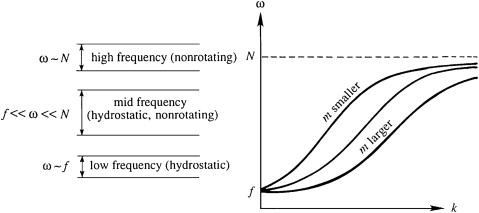

A plot of the dispersion relation \[\omega^2 - f^2 = \frac{k^2}{m^2} \left( N^2 - \omega^2 \right)\] showing $\omega$ as a function of $k$ for various values of $m$. All curves pass through the point $\omega = f$, which represents inertial oscillations. Typically, $N \gg f$ in most of the atmosphere and the ocean
